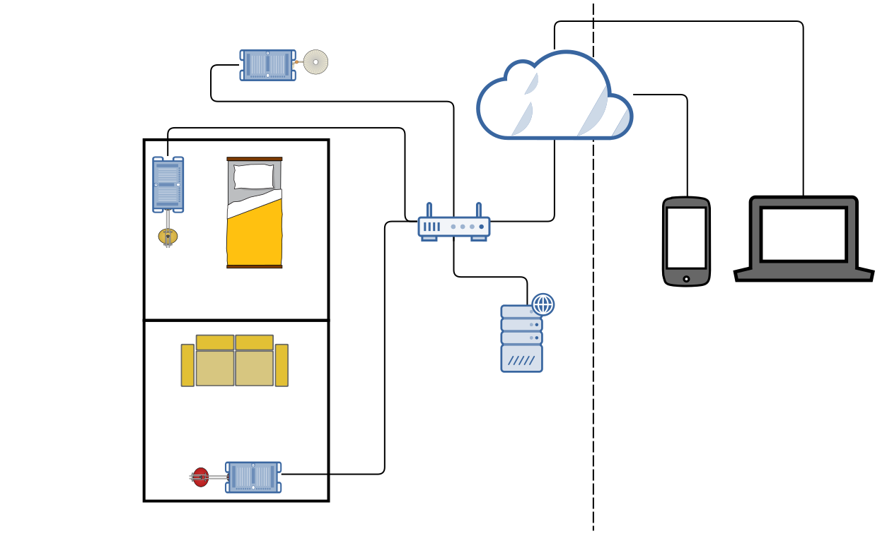

We have 3 modes : Manual, Scheduling and LDR mode. We have also implemented an energy saving feature which switches the lights off according to the occupancy of the room.

This mode lets you set the color of the LED by selecting it from the color palette.
When do you want to switch it on ??
You dont have to do it everytime. We'll take of care it for you!!
Again you can set the color of the LED by selecting it from the color palette. Plus this mode lets you set the time when you want to switch the lights on and switch it off.
Just set the LDR mode on.